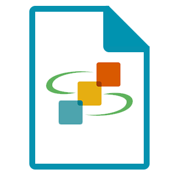

Getting Started
SageModeler runs in your web browser. Start building your own system models now. Available in English, Spanish, Chinese, Turkish, or Hebrew!
Example Systems Models
Get inspired! Browse example models by model type (diagram, static equilibrium, and dynamic time-based), disciplinary topic, and grade level.

Curricular Units
Explore curricular units that introduce modeling with SageModeler while iterating student understanding of scientific phenomena.